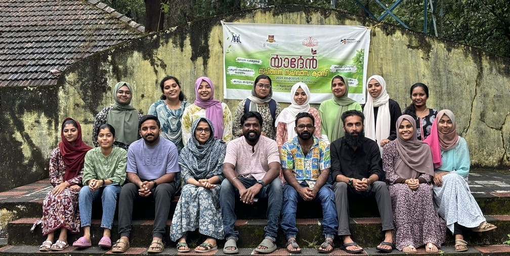

Department of Social Work
Home > Academics > Departments > Social Work
Dept. of Social Work
The Department of Social Work was established in 2024 and is committed to developing social work leaders with robust disciplinary skills and humanitarian values. The department advocates an education in social work that is democratic and emancipatory, fostering a critical perspective in students. It offers dynamic and relevant master's programs, explores new areas for social work practice, and devises innovative strategies through practice-based research and field action projects. Additionally, the department prioritizes research, networking, and collaboration with governmental and non-governmental organizations for capacity building, program development, and outreach.
Vision
To become a premier center of excellence in social work education and research, we envision a future where students are empowered with the knowledge, skills, and values necessary to tackle complex and diverse societal challenges. Our goal is to cultivate a cadre of social work leaders who uphold strong disciplinary skills and ethical and moral values.
Mission
Provide students with a comprehensive understanding of the principles, theories, and practices of social work and research.
Integrate subaltern and marginalised communities into mainstream social work.
Foster critical thinking among students and bring them from the periphery to the centre of active social life and the nation-building process.
Create socially responsible social work leaders with ethical values and practical knowledge.
Copyrights © 2022 siasindia All rights reserved. Developed by Fugipie